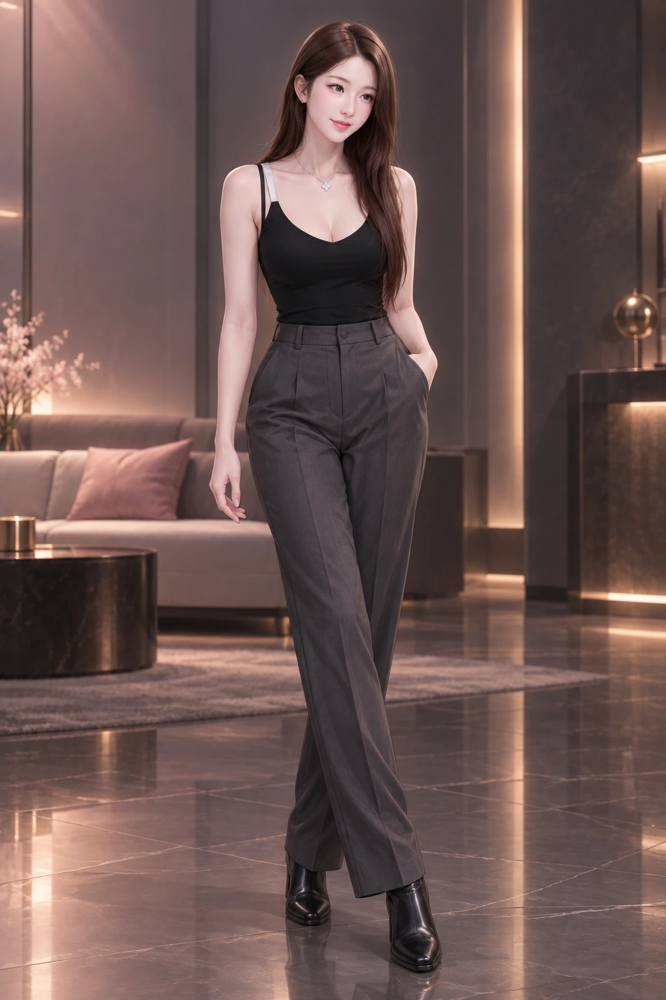
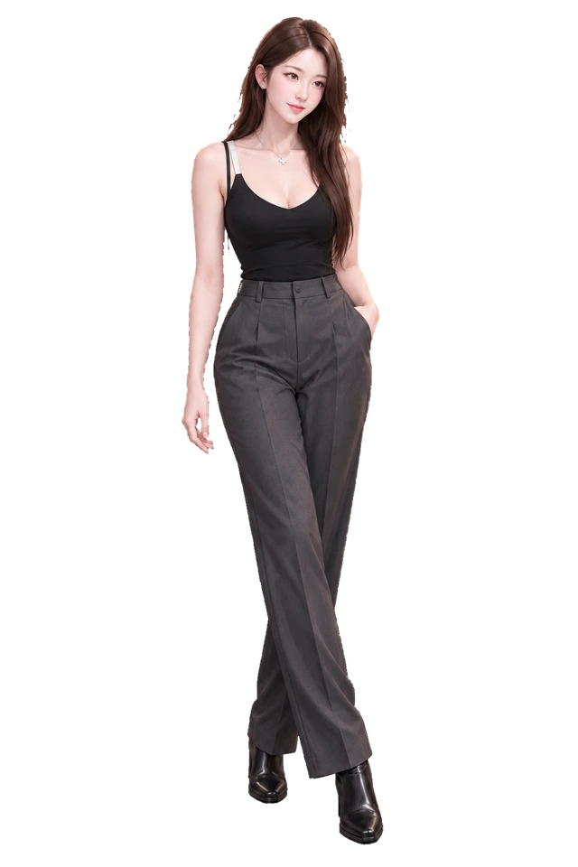

SOOPKETMON / AVATAR COLLECTION
체온 CHEON
A-14 · 신규 아바타
01 로비 일러스트
2:3 · 1024 × 1536
02 장비창 전신
RGBA · 투명 PNG
CMS → 아바타 관리 → A-14 체온. 이미지 등록 완료 · 지급·판매·능력치는 별도 설정입니다.
SOOPKETMON / AVATAR COLLECTION
A-14 · 신규 아바타


CMS → 아바타 관리 → A-14 체온. 이미지 등록 완료 · 지급·판매·능력치는 별도 설정입니다.